Gallery of Teyvat
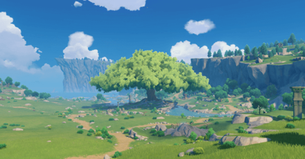
Windrise, Galesong Hill, Mondstat
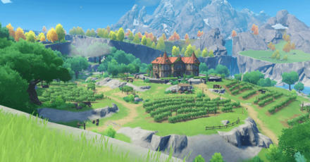
Dawn Winery, Windwail Highland, Mondstat
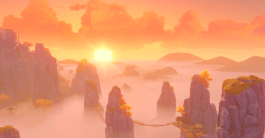
Huaguang Stone Forest, Minlin, Liyue
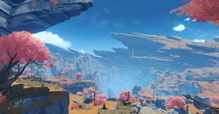
The Chasm, Liyue
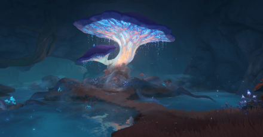
The Glowing Narrows, The Chasm: Underground Mines, Liyue
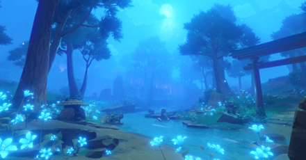
Chinju Forest, Narukami Island, Inazuma
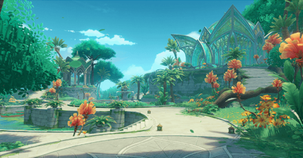
Pardis Dhyai, Ashavan Realm, Sumeru
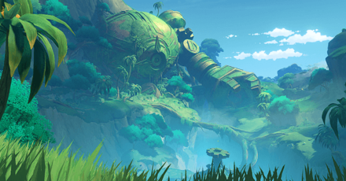
Devantaka Mountain, Ardravi Valley, Sumeru
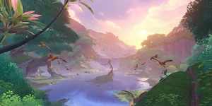
Mt. Damawand, Desert of Hadramaveth, Sumeru
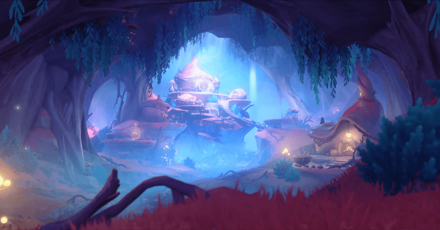
Merusea Village, Beryl Region, Fontaine
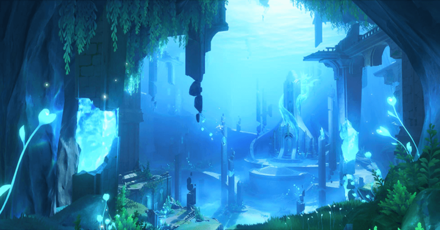
Annapausis, Court of Fontaine Region, Fontaine
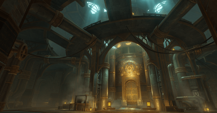
Fortress of Meropide, Liffey Region, Fontaine
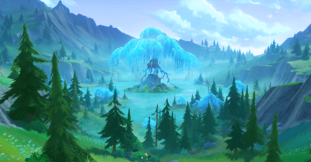
Weeping Willow of the Lake, Erinnyes Forest, Fontaine
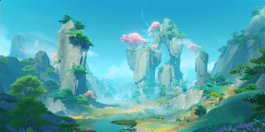
Mt. Xuanlian, Chenyu Vale: Southern Mountain, Liyue
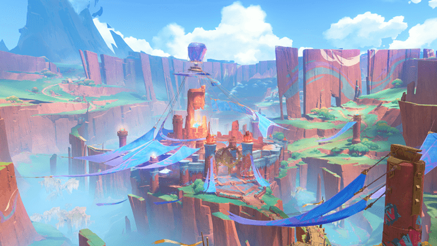
Basin of Unnumbered Flames, Natlan
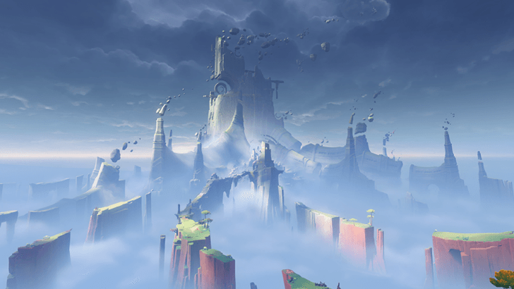
"Flower-Feather Clan", Quahuacan Cliff, Natlan